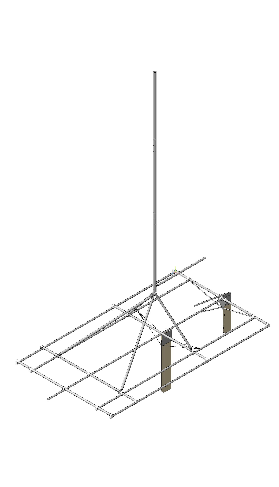

Открытый проект, цель которого создать полный комплект всех необходимых чертежей, документации и прочего материала для самостоятельной постройки туристического разборного парусного катамарана «Такикат».
Чертежи катамарана разработаны в программе Компас 3D Home v13 (это ПО было выбрано ввиду наличие бесплатной версии для домашнего использования. Если есть более продвинутые и подходящие программные продукты, предлагайте).
В итоге, после проработки всех деталей проекта, на выходе должен получится проект, который существенно снизит порог вхождения всех начинающих яхтсменов в таком не легком деле, как постройка парусного катамарана своими силами.
Проект будет приносить помощь всем желающим примерно по такой схеме:
Скачал и открыл проект катамарана, его деталей, узлов в программе Компас.
Если нет возможности установки Компас-а на компьютере, то доступны основные детали и узлы в картинках, в том числе и чертежи для самостоятельного изготовления. (по сути планируется создать интерактивную инструкцию в виде сайта, благо инструментов и возможностей по созданию таковой на сегодня великое множество, осталось только выбрать наиболее удобный)
Далее, проанализировав все детали катамарана можно будет уже для себя решить, делать катамаран полностью самому или частично. К проекту будет формироваться список людей и компаний с ценами и сроками по изготовлению той или иной детали, узла.
А главное, ввиду возможностей Компас 3D осуществлять параметризацию деталей, будет реализована функция установки базовых параметров проекта. Например, изменили диаметр и толщину трубы поперечных балок, проект в автоматическом режиме пересчитает проект и обновит все чертежи с учетом новых параметров (пока эта функция находится в стадии реализации).
И еще. Не возбраняется, а даже приветствуется всем желающим в последующем наладить коммерческое производство этого катамарана на базе этого проекта.
takicat.github.io/takicat/ - официальный сайт
github.com/takicat/takicat/ - репозиторий проекта
Текущая версия 0.1.dev (в разработке).
Участие в проекте только приветствуется.
Длина: 6м
Ширина: 3м
Высота: 7.2м
Высота мачты: 6м
Трубы моста (рамы): Д16Т
Поперечная балка: 50х2.5
Стрингеры: 40х2
Пирамида: 50x2.5
Мачта: 70х2
Александр Кузьмин roosit@abricos.org
Константин
Участники форума «Под гиком»
Аналог лицензии MIT, только распростроняется не на программное обеспечение, а на конструкцию, чертежи и прочий электронный материал.
Проще говоря, нет никаких ограничений по использованию электронного материала данного проекта, кроме как обязательного указания ссылки на официальную страничку проекта http://takicat.github.io/takicat/
И главное, авторы проекта не несут какой либо ответственности за данную конструкцию катамарана и его узлов.